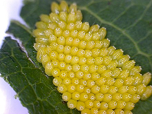
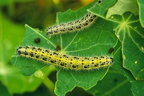
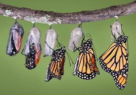
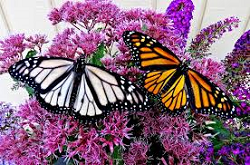

This Page was last modified on:
Butterfly Garden
See and Learn about Butterflies
Facts about butterflies:
- There are about 17,500 species of butterflies in the world, and around 750 species in the United States.
- Butterfly wings are transparent. Wings are covered by thousands of tiny scales, and these scales reflect light in different colors.
- Butterflies taste with their wings.
- Butterflies live on all liquid diet.
- An adult butter has very short life.
- The first thing a caterpillar eats after it hatches from its cocoon is usually the shell of the cocoon itself.
- Butterflies have long tongues that are shaped like tubes that gives them the ability to soak up food instead of sipping it.
- Many scientists thought butterflies were completely deaf until they first identified butterfly ears in 2012.
- Monarch butterflies are known for their long migrations, which is when they fly to a different part of the country, or world, when the weather changes.
Lifecycle of Butterfly
| Life stages of Butterfly | |
|---|---|
| Eggs |  |
| Caterpillar |  |
| Cocoon |  |
| Adult Butterfly |  |
The life cycle of a butterfly is categorized into four stages that are eggs, larva state, pupa and finally an adult butterfly. The butterfly lifecycle has these four stages, and each stage has its own different
form, its own importance, and its own goals. When you talk about the caterpillars they are like eating machines, when you talk about the adult butterflies, they have the intentions of reproduction and producing more such new butterflies
and also renders a helping hand for the pollination process of flowers. Every stage has its own importance and in a combined form helps in the completion of a butterfly lifecycle. If you are wondering about the time period, that a butterfly
takes to complete its whole lifecycle and to transform into an adult then this may vary from species to species. Some butterfly may take an entire year to complete the whole process whereas some may finish it in a short span of just one
month.